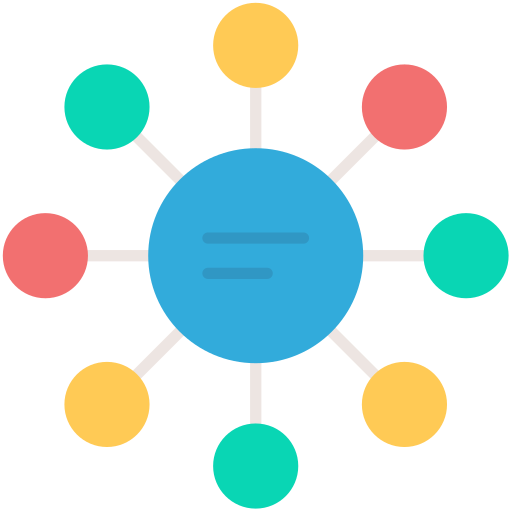

Efektívne spravovanie vašich úloh na jednom mieste.

Organizátor Úloh je aplikácia navrhnutá na efektívne spravovanie vašich denných, týždenných alebo dlhodobých úloh. Pomáha vám plánovať, sledovať a dosahovať vaše ciele.
Táto aplikácia je dostupná na stiahnutie vo verzii 1.0 pre všetky Windows systémy.
← Späť na Módy a Aplikácie